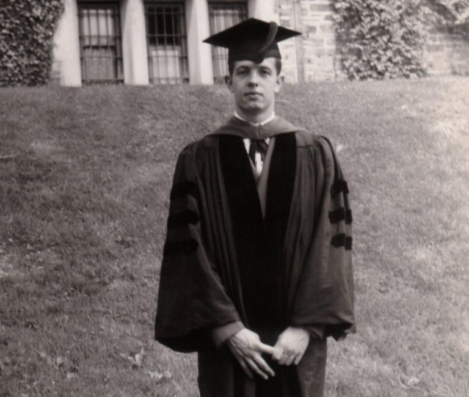
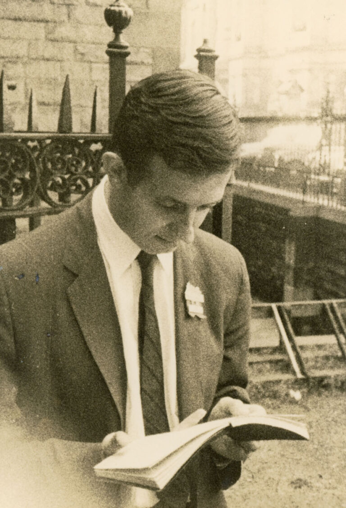

Зміст
Дитинство
Вчений народився 13 червня 1928 року у Західній Віргінії, у містечку Блуфілд. Астрологи стверджують, що в цей період на землю приходять незвичайні особистості. Тим, кому опікується сузір'я Близнюків, важко знайти собі пару, зате вони відрізняються легким, майже повітряним, характером, сильним інтелектом. Батьки хлопчика були протестантами, у їх сім'ї панувала дисципліна, неухильно дотримувалися релігійних традицій.
Майбутній учений не радував батьків шкільними здобутками, був стандартним середнячком. Математика не приваблювала його, він називав цей предмет нудним до позіхання. Мама Джона викладала англійську мову, батько був інженером-електриком. Їх засмучувало, що син не відрізняється цілеспрямованістю та старанністю. Але батьки упереджено ставилися до підлітка. Насправді Неш був начитаним, захоплювався хімією, яку осягав практичним шляхом через численні досліди.
Математика у школі велася не найкращим чином. І лише щасливий випадок змусив хлопчика звернути на неї особливу увагу. У 14-річному віці він прочитав книгу "Великі математики", відому роботу Еріка Темпла Белла. У юнака виник цілком обґрунтований інтерес до цієї науки. Захопившись математичними обчисленнями, підліток довів малу теорему Ферма. Викладачі дуже здивувалися цим фактом. Але сам Неш навіть у старших класах ніяк не міг визначитись із майбутньою професією.
Заняття наукою
Математичний талант юнака, який відкрився у школі, не залишився поза увагою викладачів. Джону оплатили навчання в університеті, за визначні здібності він отримав стипендію. Після закінчення школи молодик став студентом-хіміком Політехнічного інституту Карнегі. Через деякий час інтерес до цього предмета в нього зник. Неш зайнявся вивченням міжнародної економіки, але незабаром переконався, що найбільше його приваблює математика.
У двадцять років Джон мав уже два дипломи, він став бакалавром і магістром. Однак хлопець вирішив йти далі, почав навчатися в дослідницькому університеті Прінстона у Нью-Джерсі. Його викладач, Річард Даффін, дав випускнику рекомендаційний лист, у якому назвав Неша математичним генієм.
Неш був прикладним студентом, рідко був присутній під час занять. Молодий учений вважав, що колективне навчання шкодить йому, знижує його дослідницьку оригінальність. Великий вплив на юнака зробив метод «Теорія ігор», сформульований Моргенштерном і Нейманом, Неш дуже захопився ним. В результаті математик створив власне вчення, яке стало широко використовуватися в економіці.
Через рік молодий дослідник блискуче захистив дисертацію, головні положення якої його колеги почали називати «рівновагою з Нешу». Після цієї події минуло 44 роки, дисертація набула розвитку, вчений — Нобелівську премію з економіки. Чотири наступні роботи математика, присвячені некооперативної гри, стали справжнім проривом у науці.

Після закінчення навчання юний геній став співробітником Массачусетського технологічного інституту. Колеги, представники наукового світу ставилися до Неша з великою повагою. Але за кілька років у молодого викладача виникли проблеми з психікою. Джона завжди вважали дещо дивною, нелюдимою людиною. Незважаючи на приналежність до знака Близнюків, характер у нього завжди був непростим. Талановитий вчений важко сходився з людьми, його не любили за зарозумілість. З роками всі негативні якості лише посилювалися.
Він зник з поля зору колег, повернувшись до наукової спільноти через три десятки років. Після тривалої відсутності вчений зумів відновити наукову діяльність, самостійно впорався із депресивним станом. Коли Нешу виповнилося 66 років, він став лауреатом Нобелівської премії. При цьому йому не довелося читати традиційну лекцію у Стокгольмському університеті, колеги боялися нашкодити неміцній психічній рівновазі, в якій знаходився геній. Щоб стрес не зашкодив йому, Нешу дозволили виступити з лекцією в університеті Упсальського. Лауреат читав лекцію про космологію.
У 2015 році вчений за визначний внесок у науку отримав ще одну, Абелевську премію. Він став першим у світі володарем одразу двох нагород. Другу премію було вручено великому математику за розвиток теорії нелінійних диференціальних рівнянь.
Роботи цього вченого відомі у всьому світі. Його праці - "Некооперативні ігри", "Проблема торгів" є настільними книгами американських, європейських, азіатських економістів, математиків. З 70-х теорія ігор Неша стала основою для експериментальної економіки. Вчений є автором багатьох цитат, які відрізняються неймовірною мудрістю та парадоксальністю.
Весь вчений світ визнає досягнення генія. Найціннішими з них вважаються дві роботи, теорія ігор, що набула широкого застосування в економіці, суспільних науках, політології та формула рівноваги. Друга робота свідчить – учасники будуть у програші у тому випадку, якщо хоча б один із них порушить колишню домовленість.

Біографія вченого завжди викликала живий інтерес у оточуючих. Журналістка Сільвія Назар стала автором книги про його непросту долю, пошуки істини, боротьбу з хворобою. Режисер Рон Ховард створив на основі цього твору картину "Ігри розуму". У ролі генія виступав Рассел Кроу.
Особисте життя
Як справжній представник зодіакальних Близнюків, Неш не одразу знайшов собі пару. Його перший досвід був невдалим. Молодий учений зустрічався з Леонор Стир, медсестрою, вона була на 5 років старша. Коли жінка оголосила, що чекає на дитину, Джон повівся не найкращим чином. Він повністю відмовив своїй обраниці в будь-якій підтримці, відмовився дати дитині своє ім'я. Леонор народила хлопчика, якому перші роки життя довелося провести у притулку, оскільки мати не мала коштів на його утримання. Ім'я сина великого математика, який народився 1953 року – Джон Девід.

Наступна спроба знайти собі пару була вдалою. Обранкою математика стала студентка фізичного факультету із Сальвадора. Дівчину звали Алісія Лард, закохані одружилися 1957 року. Через два роки у пари народився хлопчик Джон Чарльз Мартін, який успадкував математичні здібності свого великого батька.
Дитинство дитини навряд чи можна назвати безтурботним. Він цілий рік жив без імені, оскільки в цей час його батько перебував у психіатричній лікарні. Після повернення Неша подружжя залишило малюка під опікою бабусі, а самі вирушили до Європи. Але сімейне щастя було недовгим, Алісія вирішила залишити чоловіка вже через рік, вона не могла витримувати його чудасії та витівки.
Алісія виховувала сина одна, через кілька років стало ясно, що Джон-молодший успадкував від тата не тільки здібності, а й шизофренічне розлад. Алісію мучили муки совісті, вона вважала себе зрадницею, що залишила хворого чоловіка. Через дев'ять років самотнього життя вона повернулася до вченого, щоб більше ніколи не розлучатися з ним.
З тридцятирічного віку вчений страждав на параноїдальну шизофренію. Спочатку дружина приховувала хворобу чоловіка від оточуючих, але захворювання прогресувало. Неш став пацієнтом бостонської приватної клініки, дружині довелося відвести його туди силоміць. В результаті вчений залишився без роботи. Після примусового лікування подружжя залишило Сполучені Штати. Але влада США не збиралася розлучатися з іменитим математиком, його депортували на батьківщину.
Тут його хвороба стала прогресувати, йому докучали страхи, мучили слухові галюцинації. У 60-х роках Неш знову пройшов курс лікування, проте поліпшення не було. Після цього він відвідував психіатра, лікувався за допомогою спеціальних препаратів. Ці сеанси оплачували колеги великого математика. Після тимчасового покращення настав регрес, Джон перестав приймати лікарські засоби, оскільки побоювався, що вони можуть завдати йому непоправної шкоди. У 80-х роках настало помітне покращення його психологічного стану. Математик самостійно впорався із симптомами, зумів повернутися до наукової діяльності.
Смерть
Джон та Алісія загинули в автокатастрофі у 2015 році. Вченому було 86 років. Власник креативного розуму вважав себе рідкісним щасливцем. Він приніс велику користь людству, зумів перемогти хворобу, помер одного дня з коханою жінкою.